Erik Moyer is a writer and data scientist from Hillsborough, New Jersey. He holds a PhD in creative writing from the University of North Texas, an MFA in writing from the University of California, Irvine, an MBA in business analytics from Florida State University, and a BS in systems engineering and poetry writing from the University of Virginia. His work appears in Columbia Journal, The New York Times, Oxford Poetry, The Pinch, The Rumpus, and elsewhere. His manuscript, How to Be Lonely, was a finalist for the 2025 Gerard Cable Book Award from Silverfish Review Press and a semifinalist for the 2026 First Book Contest from Button Poetry. His debut chapbook, A Time Series Analysis, is forthcoming from Gnashing Teeth Publishing. In past lives, he's worked as a university writing instructor, a varsity-certified umpire, and an emergency medical technician, and has done time in New Jersey, Virginia, Washington DC, California, and Texas. In his free time, he enjoys writing songs, playing chess, and convincing his cat, Xena, that shoelaces are, in fact, snakes. He lives in New York City.
Dead South, Erik Moyer, Spotify, LP, Indie Rock, Forthcoming, December 2027
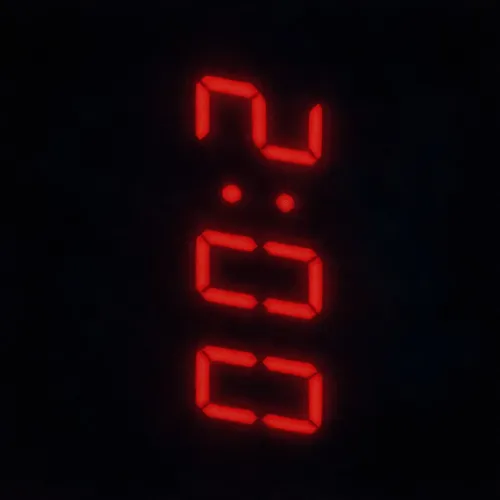
Two-Minute Warnings, Erik Moyer, Soundcloud, Mixtape, Electronica, March 2025
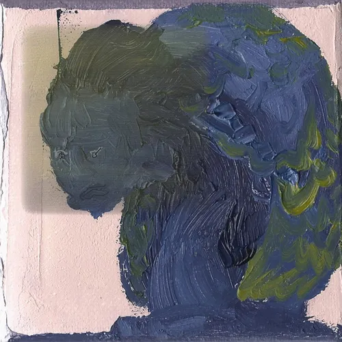
Honest Thomas, Erik Moyer, Spotify, Apple Music, & YouTube, LP, Indie Rock, August 2019
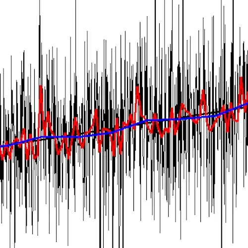
A Time Series Analysis, Gnashing Teeth Publishing, Poetry Chapbook, Forthcoming, May 2027
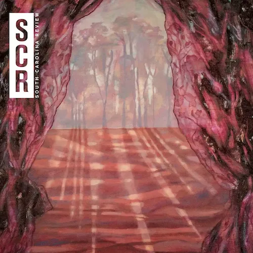
"Sit-Down Stand-Up," The South Carolina Review, Clemson University, Print, Forthcoming, November 2026
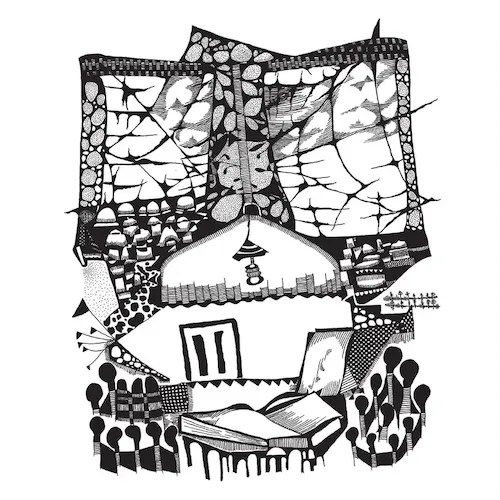
"An Ace's Gracings," Mantis, Stanford University, Print, August 2026
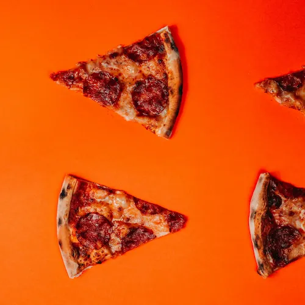
"Special Delivery" & "Blaze Pizza Receipt," The Offing, Wit Tea Column, Online, July 2026
"SYS 3060," The Louisville Review, University of Louisville, Print, June 2026
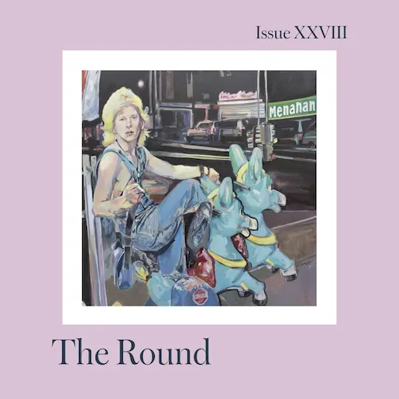
"Clearance," The Round, Brown University, Online & Print, June 2026
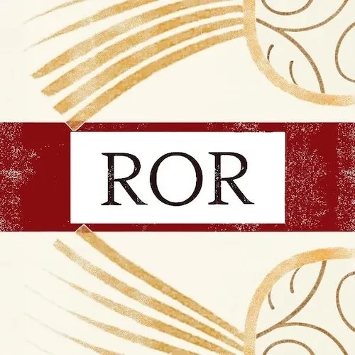
"Moon Cycle," Red Ogre Review, Online With Audio, May 2026
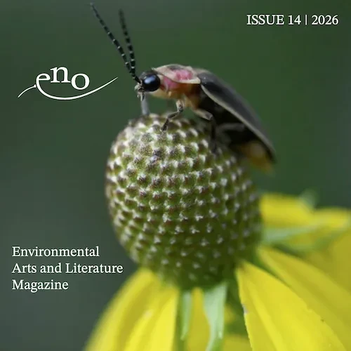
"Grand" (My First Poem) & "Downward, Onward," Eno Magazine, Duke University, Online & Print, May 2026
"Ten Reasons Why I Am Afraid to Die" & "Never Will I Ever," The Rumpus, Online, February 2026
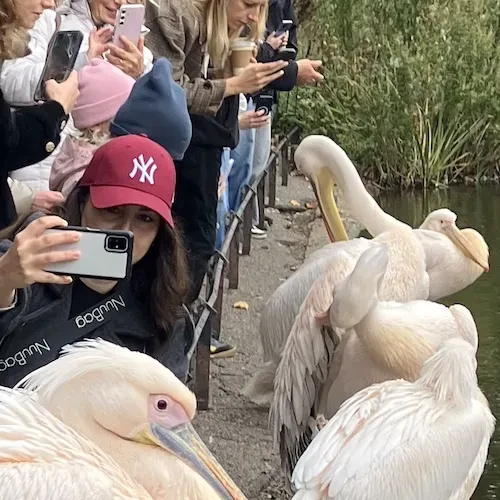
"School for the Gifted," Light Poetry Magazine, Online, November 2025
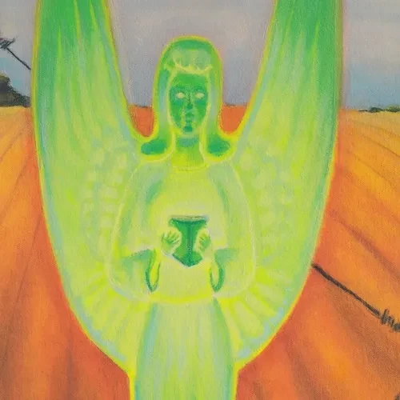
"Push, Pull, Dig," The Pinch Journal, University of Memphis, Print, October 2025
"The Painter," ONE ART, Pennsylvania State University, Republication, Anthology, Online, September 2025
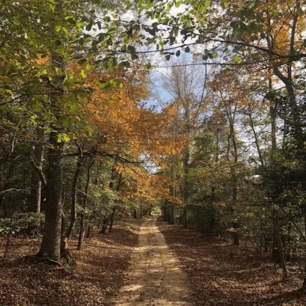
"Behind the Cue Ball," HEART, Online, July 2025
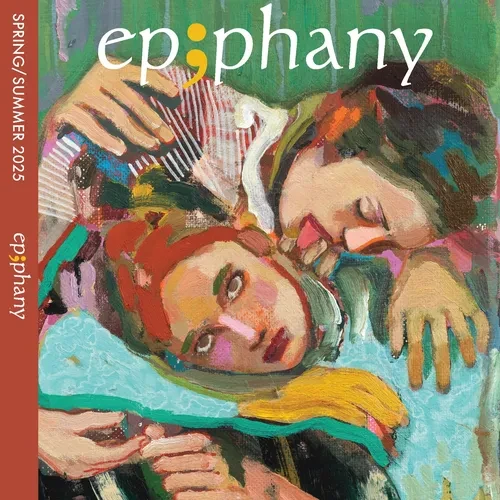
"I've Never Kissed My Father Before," Epiphany Magazine, Print, June 2025
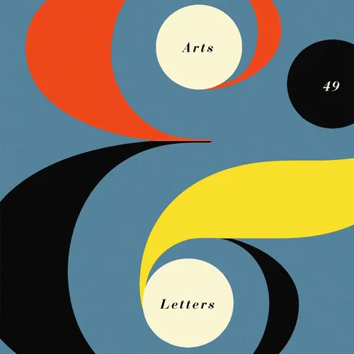
"S.I.S." (Link) & "Take a Penny, Leave (Heartless)" (Link), Arts & Letters, Georgia College & State University, Online, June 2025
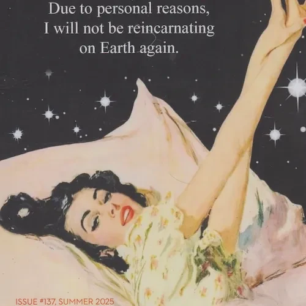
"First Date," "Five-Day Panic Attack," & "Scarf," Chiron Review, Republications, Print, June 2025
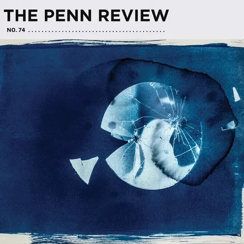
"Road Trip," The Penn Review, University of Pennsylvania, Online, December 2024
"The Ballad of Disco Stu," Oxford Poetry, University of Oxford, Print, December 2024
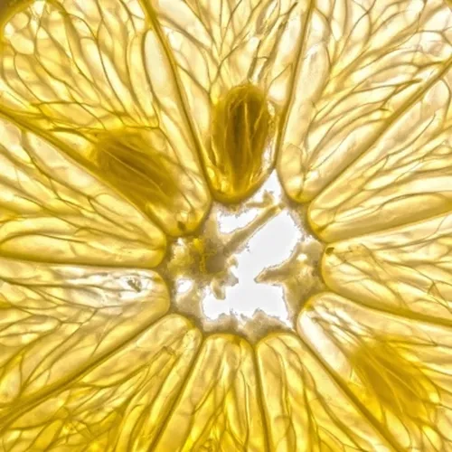
"Anniversary," Passages North, Northern Michigan University, Online, December 2024
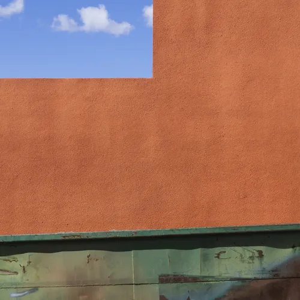
"Goody Two-Shoes," Abstract Magazine, Online, September 2024
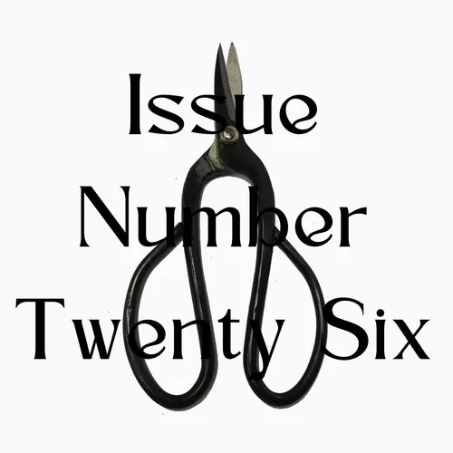
"Digital to Analog (Dupont Circle)," Stone of Madness Press, Online, July 2024
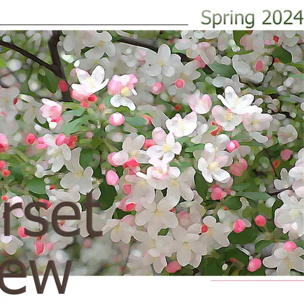
"The Painter," The Summerset Review, Online, March 2024
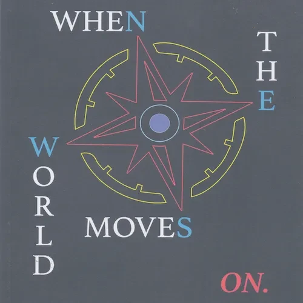
"No Leaf Has Lived to One," Berkeley Poetry Review, University of California, Berkeley, Online & Print, February 2024
"Autistic Savant, Hold the Savant" (Link) & "What Loneliness Feels Like" (Link), Literary Imagination, University of Oxford, Online, January 2024
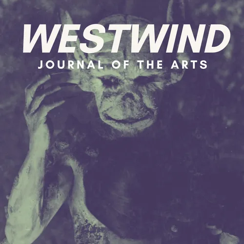
"Lunch & Regret," Westwind Journal, University of California, Los Angeles, Online, November 2023
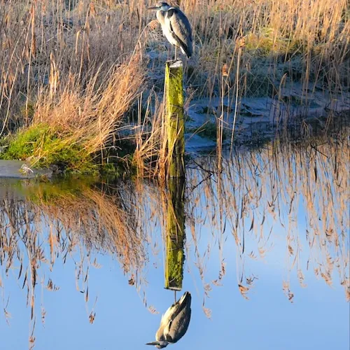
"Liz Lies," Tipton Poetry Journal, Online & Print, August 2023
"Eruptus," Euphony Journal, University of Chicago, Online & Print, May 2023
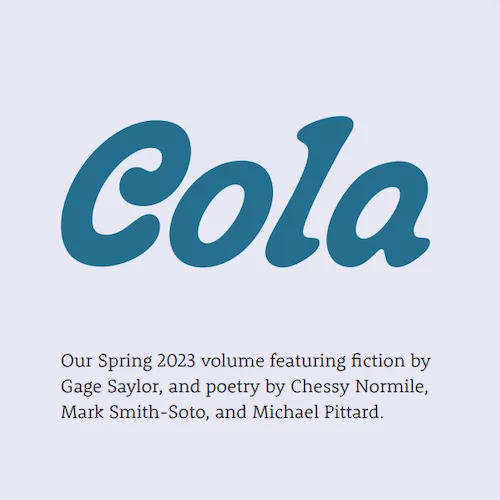
"Why Don't Vampires Just Hold Blood Drives?," Cola Literary Review, University of South Carolina, Online, April 2023
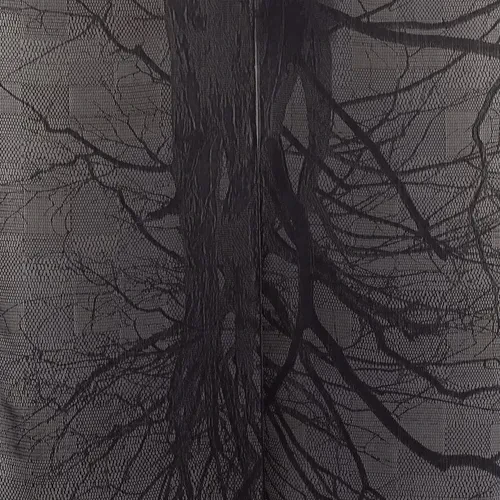
"Scarf," Bluestem Magazine, Eastern Illinois University, Online, July 2022
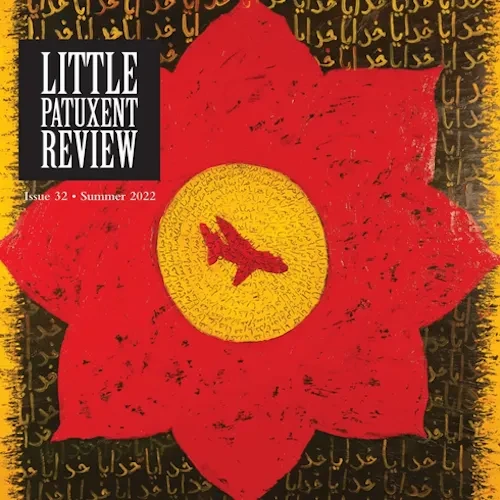
"Oxeye," Little Patuxent Review, Print, June 2022
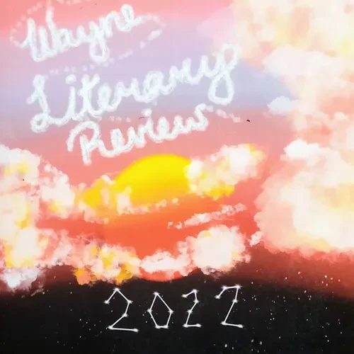
"Five-Day Panic Attack," Wayne Literary Review, Wayne State University, Online & Print, May 2022
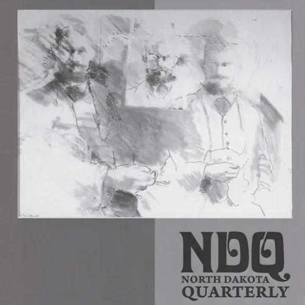
"First Date," North Dakota Quarterly, University of North Dakota, Print, March 2022
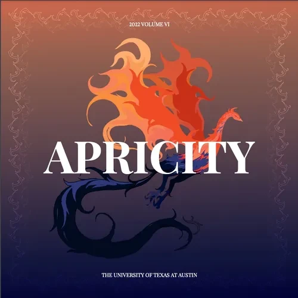
"Snooze," Apricity Magazine, University of Texas at Austin, Online, January 2022
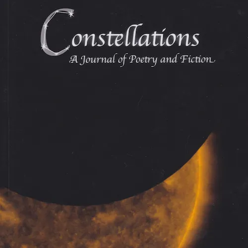
"HIPAA Violations," Constellations Journal, 2022 Pushcart Prize Nominee, Print, December 2021
"On Letting Go," Hawaii Pacific Review, Hawaii Pacific University, Online, April 2021
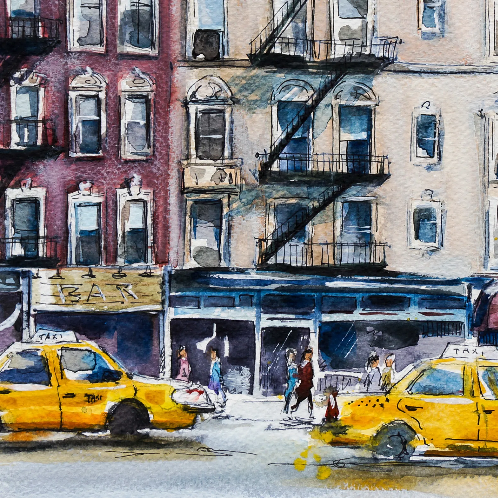
"Before Di Fara's" & "Watching Episodes of Chopped Junior," New Reader Magazine, Online, September 2018
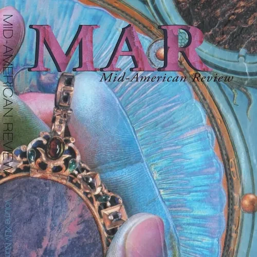
"Bear in Mind," Mid-American Review, Bowling Green State University, Flash Fiction, Print, May 2026
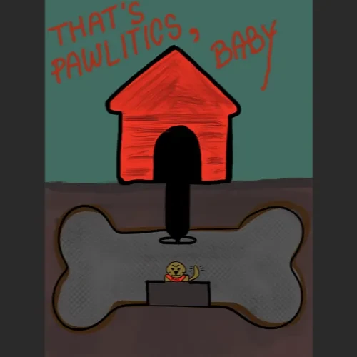
"Dirty Pawlitics," Columbia Journal, Columbia University, Flash Fiction, Online, November 2025
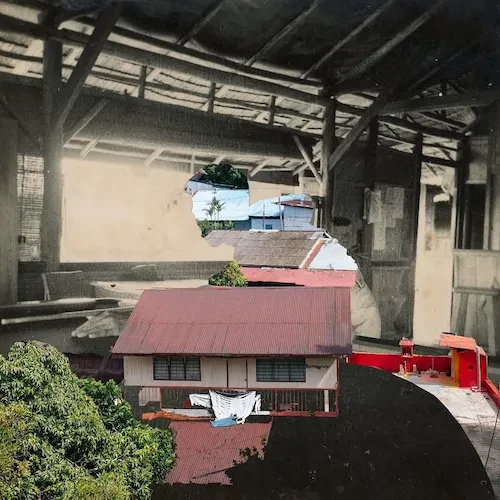
"The Chronicles of Jackie Flapjacks," Carte Blanche Magazine, Flash Fiction, Online, June 2025
"Freddy vs. Jason," Grub Street, Towson University, Flash Personal Narrative, Online & Print, May 2027, Forthcoming
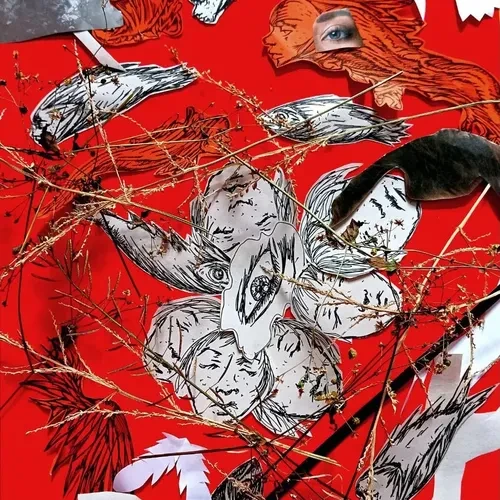
"Self-Portrait as Baby," Phoebe Journal, George Mason University, Flash Personal Narrative, Online, May 2025
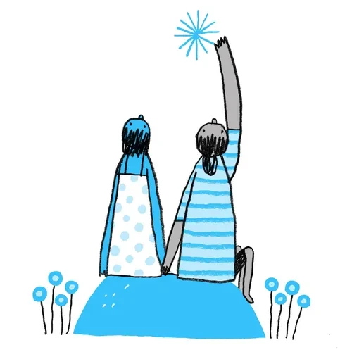
"Ride-Share Roulette," The New York Times, Modern Love Column, Tiny Love Stories Feature, Micro Personal Narrative, Online & Print, March 2025
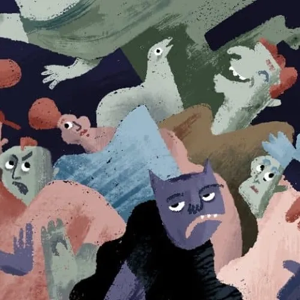
"Irrational Fears," "Down to Earth," "Armed to the Teeth," "State Championship," & "Sticks & Stones," Points in Case, Jokes, Online, October 2024 – June 2026
How to Be Lonely, UNT Digital Library, University of North Texas, Creative Doctoral Dissertation, Critical Preface & Poetry Collection, Online, Under Embargo, December 2025
Sit-Down Stand-Up, eScholarship, University of California, Irvine, Master's Thesis, Poetry Collection, Online, Under Embargo, September 2021
"Rethinking Communications and Information Technology in Emergency Medicine," UVA Library, University of Virginia, Undergraduate Thesis, Research Paper, Online, May 2016
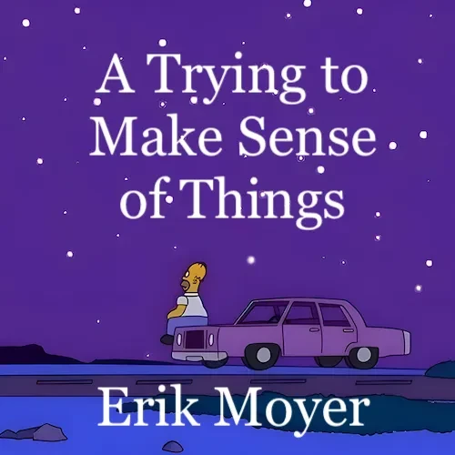
A Trying to Make Sense of Things, University of Virginia, Undergraduate Poetry Capstone Project, Poetry Chapbook, Print, May 2016
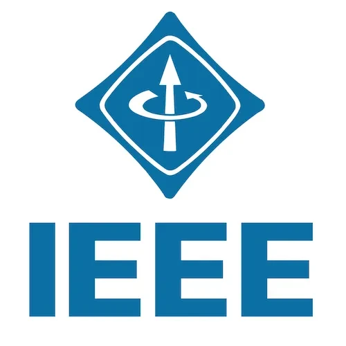
"Facilitating the Collection and Dissemination of Patient Care Information for Emergency Medical Personnel,” SIEDS 2016, IEEE, University of Virginia, Undergraduate Engineering Capstone Project, Design-Prototype Conference Paper, Online, April 2016
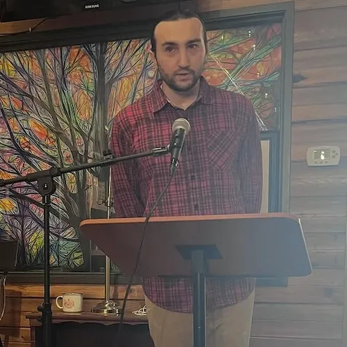
Five Poems, Patchouli Joe's Books, Denton, Texas, ALR Reading Series, American Literary Review, University of North Texas, September 2025
The Jibberjabberer, Audiobook Player, Hear With Your Ears
The Prettifier, Typesetter, Read With Your Eyes
The Rhetoricizer, Text-to-Speecher, Read With Your Ears
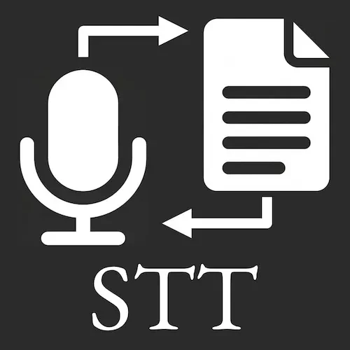
The Textualizer, Speech-to-Texter, Write With Your Mouth
The Transmogrifier, File Converter, Knead With Your Hands
The Bookcaster, E-Book/Audiobook Readio, Read With Your Brainbox
The Decipherer, Optical Character Recognizer, See With Your Eyes
The Linguifier, Interpretive Tool, Speak With Your Tongue
The Tonalizer, Music Decoder, Hear With Your Eyes
The Bibliotecher, Web App, Install With Your Finger
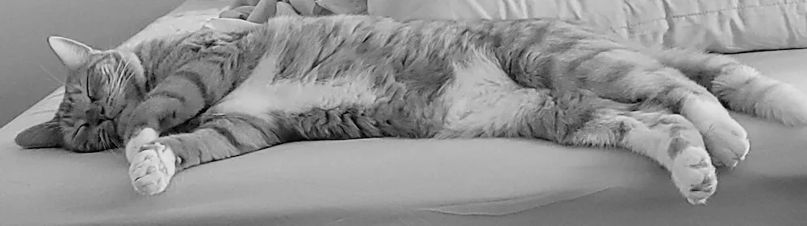